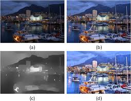

Modello Retinex

Dopo aver simulato il Veiling glare, fenomeno relativo alla retini, è necessario simulare il comportamento neurale arrivati a questo punto.
Questo perchè il cervello risponde in una certa maniera alle risposte che riceve dai passi precedenti, andando a tenere conto del contesto
spaziale. Quello che viene simulato si basa sul modello Retinex, questo è un modello che corregge il colore e il contrasto dell'immagine, secondo diverse
aree.
Questo perchè il cervello corregge i colori sulla base della media della luce nella scena, per capire se degli oggetti sono tanto illuminati o meno, come farli vedere.